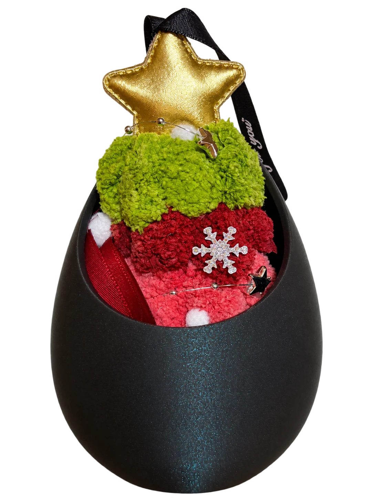
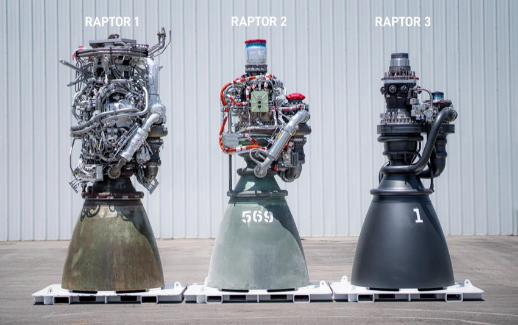
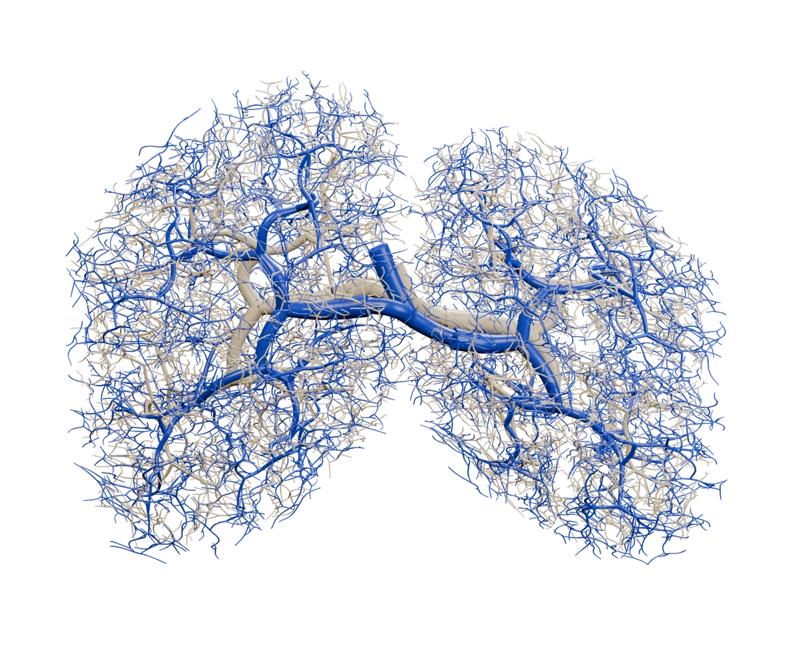
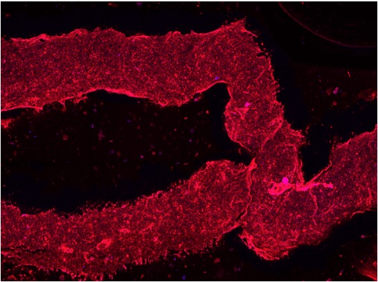
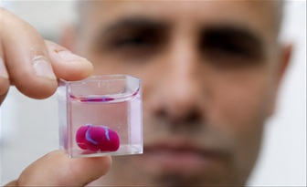
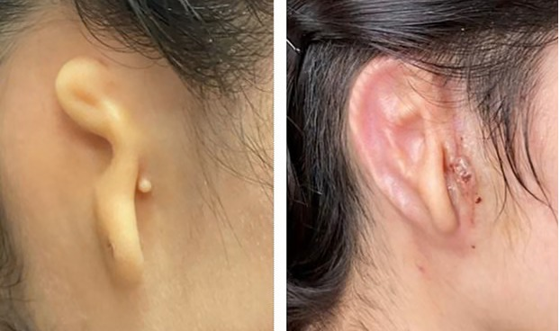
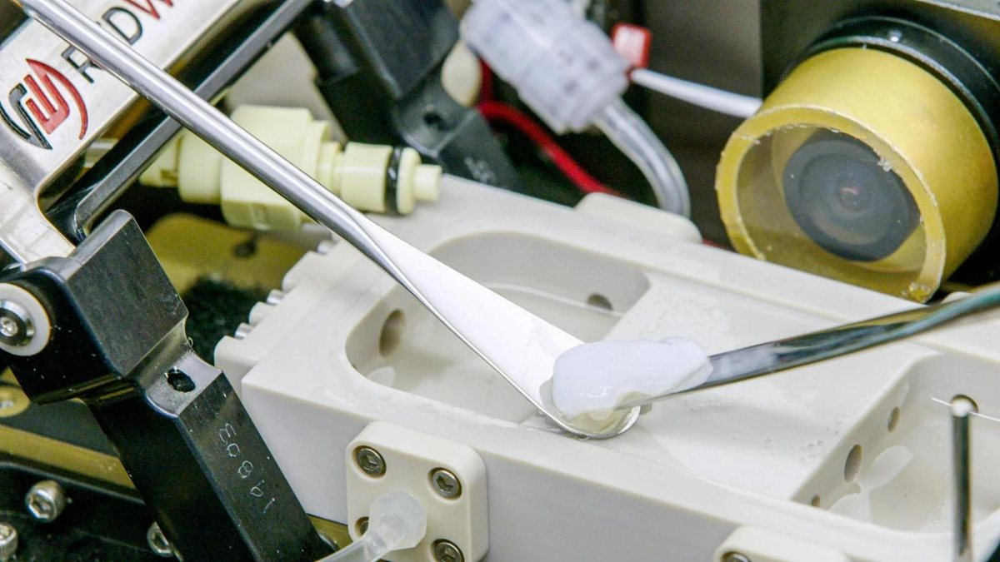
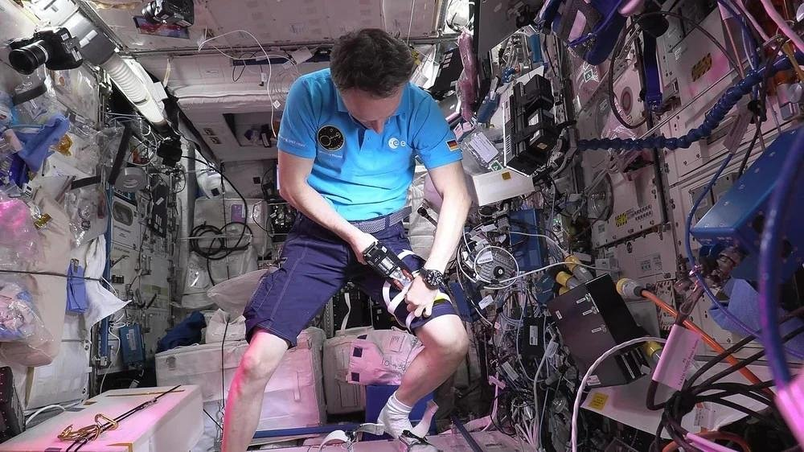

Hi, I'm Florence :)
- 🇲🇾 Born in Kuala Lumpur, Malaysia
- ⚙️ Master’s student in Mechanical Engineering at TU Berlin
- 🚀 Specializing in Fluid and Combustion Engineering
What comes to your mind
when we mention additive manufacturing,
or 3D printing?
Everyday life
Hobby printing
Engineering
SpaceX Raptor 3
Additive manufacturing helps integrate components into a more compact engine.
Built environment
A printed house
Eindhoven concrete house (illustration). The Dutch have printed bridges, too.



Speak Out for Engineering 2026
DÜSSELDORF · 5 NOVEMBER 2026
3D Bioprinting
where engineering revolutionizes medicine
Florence Mei Kuan Wong
![VDI]()
The organ shortage persists
Annual counts from 2015 to 2026
Annual report snapshot
Bioprinting publications
Stereolithography
10× in ten years
19 papers in 2015 → 201 in 2025
2026 already at 232, by October
Printing with light
SLAStereolithography: light hardens a liquid resin into a solid part, one layer at a time.Patent filed 1984 · granted 1986 · Hull coined the word
Bioink & curing
Bioink
The “ink” of a bioprinter: living cells floating in a water-rich gel precursor (for example GelMA), plus a photoinitiator that reacts to light.
Curing
Light hits the photoinitiator. It splits into radicals, very reactive molecules that link the chains together.
The liquid turns into a gel, and the cells are held in place inside it.
From patient to print
Made from the patient’s own cells, so the body is less likely to reject it.
Light from below, or from above
Bottom-up
Light shines up through a clear window in the tank floor. Each new layer sticks to that window, so the platform lifts and peels it off before the next layer.
Top-down
The classic set-up: the laser sits above and cures the surface. The platform sinks deeper and a blade spreads fresh liquid.
UV, near-infrared, or both
UV / violet
- Fast, well-known photoinitiators
- Fine detail
- Shallow: under 1 mm in tissue
- DNA and proteins absorb it, so it can harm cells
Near-infrared (NIR)
- Deeper: millimetres, over 1 cm in some studies
- Gentler on cells
- Needs special NIR-sensitive initiators
- Water absorbs it and heats up
Stereo-thermal lithography
- Photoinitiator and thermal initiator work together
- Curing is strongest only where both overlap
- Heat must stay at a level cells survive
What’s still in the way?
Fine detail or big size
The sharper the detail, the slower the print. Building a whole organ at cell-level detail would take far too long.
Laws lag behind
Regulators still struggle to classify printed tissue, and it does not fit today’s clinical-trial rules.
Room for misuse
Without joint regulation, a new black market in printed organs could appear.
Keeping cells alive
The biggest hurdle: without blood vessels, tissue cannot grow beyond 100–200 µm.
Think of a baby in the womb
In the womb
| What cells need | Womb | Printed tissue |
|---|---|---|
| Oxygen | ✓ placenta | ✗ edges only |
| Nutrients in, waste out | ✓ cord | ✗ edges only |
| Warmth, about 37 °Ca fetus runs 0.3–0.5 °C warmer than its mother | ✓ | ✓ incubator |
| Stable pH, about 7.4like blood: 7.35–7.45 | ✓ | ✓ medium |
| Clean, protected space | ✓ amniotic sac | ✓ sterile lab |
In a printed tissue
Without blood vessels, oxygen only seeps about 0.1–0.2 mm into the tissue, one or two sheets of paper thick. The cells in the middle suffocate.
How far can oxygen reach?
Where are we today?
In the lab
Printed blood vessels and a mini heart
Harvard’s Wyss Institute prints branching vessels inside living heart tissue (2024). Tel Aviv printed a heart the size of a rabbit’s from a patient’s own cells (2019). It cannot pump yet.
In a patient
A printed ear
In 2022, a woman born with microtia received an ear printed from her own cartilage cells. It was the first clinical trial of its kind.
In space
Printing on the space station
NASA’s BioFabrication Facility printed a human knee meniscus on the ISS (2023). Germany tested a handheld bio-plaster printer there (2022).
In medicine
Ready for hospitals?
Not yet. Maybe in the next 10 years, starting with simple tissues like skin and cartilage. Whole organs will take longer.





- Lab
- Patient
- Space
- Medical
Take-home summary
Engineering
tomorrow’s
possibilities.
Thank You!
![QR code for the 3D Bioprinting GitHub repository]() github.com/florencewmk/3D-Bioprinting
github.com/florencewmk/3D-BioprintingSOURCES · 01 / 05
Scientific references
[1] S. Soleymani Eil Bakhtiari et al., “3-Dimensional printing of hydrogel-based nanocomposites: A comprehensive review on the technology description, properties, and applications,” Adv. Eng. Mater., vol. 23, no. 10, Art. no. 2100477, Oct. 2021. doi: 10.1002/adem.202100477.
[2] X. He et al., “Cyanine/iodonium salt as a broad-absorbing photoinitiating system for radical photopolymerization under near-UV, visible and NIR light,” Polym. Chem., vol. 14, no. 13, pp. 1543–1553, 2023. doi: 10.1039/D2PY01466A.
[3] P. J. Bártolo and G. Mitchell, “Stereo-thermal-lithography: A new principle for rapid prototyping,” Rapid Prototyping J., vol. 9, no. 3, pp. 150–156, 2003. doi: 10.1108/13552540310477454.
[4] P. J. Bártolo, Ed., Stereolithography: Materials, Processes and Applications. Boston, MA, USA: Springer, 2011. doi: 10.1007/978-0-387-92904-0.
[5] S. O’Halloran, A. Pandit, A. Heise, and A. Kellett, “Two-photon polymerization: Fundamentals, materials, and chemical modification strategies,” Adv. Sci., vol. 10, no. 7, Art. no. 2204072, Mar. 2023. doi: 10.1002/advs.202204072.
SOURCES · 02 / 05
Scientific references
[6] G. Chen et al., “Advanced near-infrared light for monitoring and modulating the spatiotemporal dynamics of cell functions in living systems,” Adv. Sci., vol. 7, Art. no. 1903783, 2020. doi: 10.1002/advs.201903783.
[7] S. Santoni, S. G. Gugliandolo, M. Sponchioni, D. Moscatelli, and B. M. Colosimo, “3D bioprinting: Current status and trends—a guide to the literature and industrial practice,” Bio-Des. Manuf., vol. 5, pp. 14–42, 2022. doi: 10.1007/s42242-021-00165-0.
[8] A. Van Ombergen et al., “3D bioprinting in microgravity: Opportunities, challenges, and possible applications in space,” Adv. Healthcare Mater., vol. 12, no. 23, Art. no. 2300443, Sep. 2023. doi: 10.1002/adhm.202300443.
[9] A. Barbora, O. Bohar, A. A. Sivan, E. Magory, A. Nause, and R. Minnes, “Higher pulse frequency of near-infrared laser irradiation increases penetration depth for novel biomedical applications,” PLoS One, vol. 16, no. 1, Art. no. e0245350, Jan. 2021. doi: 10.1371/journal.pone.0245350.
[10] B. Grigoryan et al., “Multivascular networks and functional intravascular topologies within biocompatible hydrogels,” Science, vol. 364, no. 6439, pp. 458–464, May 2019. doi: 10.1126/science.aav9750.
Supporting literature
[25] E. S. Bishop et al., “3-D bioprinting technologies in tissue engineering and regenerative medicine: Current and future trends,” Genes Dis., vol. 4, no. 4, pp. 185–195, 2017. doi: 10.1016/j.gendis.2017.10.002.
[26] D. Kam, O. Rulf, A. Reisinger, R. Lieberman, and S. Magdassi, “3D printing by stereolithography using thermal initiators,” Nat. Commun., vol. 15, Art. no. 2285, 2024. doi: 10.1038/s41467-024-46532-0.
[27] F. A. M. M. Gonçalves et al., “3D printing of new biobased unsaturated polyesters by microstereo-thermal-lithography,” Biofabrication, vol. 6, no. 3, Art. no. 035024, 2014. doi: 10.1088/1758-5082/6/3/035024.
[28] Y. Gao, L. Xu, Y. Zhao, Z. You, and Q. Guan, “3D printing preview for stereo-lithography based on photopolymerization kinetic models,” Bioact. Mater., vol. 5, no. 4, pp. 798–807, 2020. doi: 10.1016/j.bioactmat.2020.05.006.
[29] J. Sun et al., “Imaging-guided microscale photothermal stereolithography bioprinting,” Adv. Sci., vol. 12, no. 18, Art. no. 2500640, May 2025. doi: 10.1002/advs.202500640.
[30] R. F. Pereira and P. J. Bártolo, “Photocrosslinkable materials for the fabrication of tissue-engineered constructs by stereolithography,” in Tissue Engineering, P. Fernandes and P. Bártolo, Eds. Dordrecht, The Netherlands: Springer, 2014, pp. 149–178. doi: 10.1007/978-94-007-7073-7_8.
[31] T. Patrício, R. Pereira, L. Oliveira, and P. Bártolo, “Polyethylene glycol and polyethylene glycol/hydroxyapatite constructs produced through stereo-thermal-lithography,” Adv. Mater. Res., vol. 749, pp. 87–92, 2013. doi: 10.4028/www.scientific.net/AMR.749.87.
[32] M. Duocastella, J. M. Fernández-Pradas, J. Domínguez, P. Serra, and J. L. Morenza, “Printing biological solutions through laser-induced forward transfer,” Appl. Phys. A, vol. 93, pp. 941–945, 2008. doi: 10.1007/s00339-008-4741-6.
[33] A. Afridi, A. Al Rashid, and M. Koç, “Recent advances in the development of stereolithography-based additive manufacturing processes: A review of applications and challenges,” Bioprinting, vol. 43, Art. no. e00360, 2024. doi: 10.1016/j.bprint.2024.e00360.
[34] R. Raman and R. Bashir, “Stereolithographic 3D bioprinting for biomedical applications,” in Essentials of 3D Biofabrication and Translation, A. Atala and J. J. Yoo, Eds. Academic Press, 2015, pp. 89–121. doi: 10.1016/B978-0-12-800972-7.00006-2.
[35] X. He et al., “Stereolithography 3D printing upon near-infrared photopolymerization,” Chem. Eng. J., vol. 507, Art. no. 160857, 2025. doi: 10.1016/j.cej.2025.160857.
[36] W. Li, M. Wang, H. Ma, F. A. Chapa-Villarreal, A. O. Lobo, and Y. S. Zhang, “Stereolithography apparatus and digital light processing-based 3D bioprinting for tissue fabrication,” iScience, vol. 26, no. 2, Art. no. 106039, 2023. doi: 10.1016/j.isci.2023.106039.
[37] S. A. Skoog, P. L. Goering, and R. J. Narayan, “Stereolithography in tissue engineering,” J. Mater. Sci. Mater. Med., vol. 25, pp. 845–856, 2014. doi: 10.1007/s10856-013-5107-y.
[38] F. A. M. M. Gonçalves, A. C. Fonseca, M. Domingos, A. Gloria, A. C. Serra, and J. F. J. Coelho, “The potential of unsaturated polyesters in biomedicine and tissue engineering: Synthesis, structure-properties relationships and additive manufacturing,” Prog. Polym. Sci., vol. 68, pp. 1–34, 2017. doi: 10.1016/j.progpolymsci.2016.12.008.
[39] B. K. Kaufmann et al., “mSLAb—An open-source masked stereolithography (mSLA) bioprinter,” HardwareX, vol. 19, Art. no. e00543, 2024. doi: 10.1016/j.ohx.2024.e00543.
[40] Z. Gu, J. Fu, H. Lin, and Y. He, “Development of 3D bioprinting: From printing methods to biomedical applications,” Asian J. Pharm. Sci., vol. 15, no. 5, pp. 529–557, 2020. doi: 10.1016/j.ajps.2019.11.003.
[41] J. F. J. Coelho, Ed., Drug Delivery Systems: Advanced Technologies Potentially Applicable in Personalised Treatment. Dordrecht, The Netherlands: Springer, 2013. doi: 10.1007/978-94-007-6010-3.
[42] Y. Sang, Z. Zhao, M. Zhao, P. Hao, Y. Leng, and H. Liu, “From UV to near-infrared, WS₂ nanosheet: A novel photocatalyst for full solar light spectrum photodegradation,” Adv. Mater., vol. 27, no. 2, pp. 363–369, 2015. doi: 10.1002/adma.201403264.
[43] W. K. Swainson, “Method, medium and apparatus for producing three-dimensional figure product,” U.S. Patent 4 041 476, Aug. 9, 1977.
SOURCES · 03 / 05
Data and online sources
[11] Clarivate. Web of Science Core Collection. Publication years 2000–2023; analysis and visualization by Florence Mei Kuan Wong, 14 October 2026.
[12] Bioprinting World Map, linked to Santoni et al. (2022). Country counts compiled by Florence Mei Kuan Wong. Accessed 13 October 2026.
[13] Readily3D. Tomolite Bioprinter; Videos & Events. https://readily3d.com/videos-events/ (accessed 14 October 2026).
[14] Rice University. (2019). Organ bioprinting gets a breath of fresh air. https://news.rice.edu/news/2019/organ-bioprinting-gets-breath-fresh-air (accessed 14 October 2026).
[15] Harvard SEAS / Wyss Institute. (2024). 3D-printed blood vessels bring artificial organs closer to reality. https://seas.harvard.edu/news/2024/08/3d-printed-blood-vessels-bring-artificial-organs-closer-reality (accessed 14 October 2026).
SOURCES · 04 / 05
Data and online sources
[16] CELLINK. Tissue-specific bioinks. https://www.cellink.com/bioinks/tissue-specific-bioinks/ (accessed 14 October 2026).
[17] Nanoscribe. Quantum X bio: High-resolution 3D bioprinter. https://www.nanoscribe.com/en/products/high-resolution-3d-bioprinter-quantum-x-bio/ (accessed 14 October 2026).
[18] NASA. 3D Bioprinting. https://www.nasa.gov/missions/station/iss-research/3d-bioprinting/ (accessed 14 October 2026).
[19] German Aerospace Center (DLR). (2022). 3D-printed bio-plaster. https://www.dlr.de/en/latest/news/2022/01/20220131_3d-printed-bio-plaster (accessed 14 October 2026).
Web sources
[48] Wyss Institute for Biologically Inspired Engineering, Harvard Univ., “3D bioprinting of living tissues.” Accessed: Nov. 4, 2026. [Online]. Available: https://wyss.harvard.edu/technology/3d-bioprinting/
[49] Microtia – Congenital Ear Institute, “3D bioprinting: Growing a child’s own ear in the lab.” Accessed: Nov. 4, 2026. [Online]. Available: https://www.microtia.net/3d-bioprinting/
[50] CELLINK, “Bioprinted ear successfully transplanted into patient,” CELLINK Blog. Accessed: Nov. 4, 2026. [Online]. Available: https://www.cellink.com/blog/bioprinted-ear-successfully-transplanted-into-patient/
YouTube videos
[44] iluli by Mike Lamb, “Bioprinting: An Organ Transplant Revolution?,” YouTube, Apr. 1, 2023. Accessed: Nov. 4, 2026. [Online Video]. Available: https://www.youtube.com/watch?v=_cJC3lcmrjE
[45] K. Vos, “Printing our future: how 3D bioprinting will revolutionize medicine,” TEDxVictoria, YouTube. Accessed: Nov. 4, 2026. [Online Video]. Available: https://www.youtube.com/watch?v=btRQ8QuXtO4
[46] Protolabs, “How Does Stereolithography 3D Printing Work?,” YouTube. Accessed: Nov. 4, 2026. [Online Video]. Available: https://www.youtube.com/watch?v=0kHDXPQDSYY
[47] EPFL, “Printing tiny, high-precision objects in a matter of seconds,” YouTube, Feb. 12, 2020. Accessed: Nov. 4, 2026. [Online Video]. Available: https://www.youtube.com/watch?v=ONBHkzimRbg
SOURCES · 05 / 05
Images
[20] Tel Aviv University. (2019). TAU scientists print first ever 3D heart using patient’s own cells. https://english.tau.ac.il/node/2442
[21] ZEISS / Materials Solutions. Quality assured additive metal parts. https://www.zeiss.com/metrology/us/industries/success-stories/materials-solutions-additively-manufactured-metal-parts-with-quality-guarantee.html
[22] Project Milestone. 3D-printed concrete house, Eindhoven. https://www.3dprintedhouse.nl/en/news/?page=1
[23] MX3D. MX3D Bridge, Amsterdam. https://mx3d.com/case/mx3d-bridge/
[24] Cornell Chronicle. (2022). Cornellian-founded company implants 3D-bioprinted ear. https://news.cornell.edu/stories/2022/06/cornellian-founded-company-implants-3d-bioprinted-ear